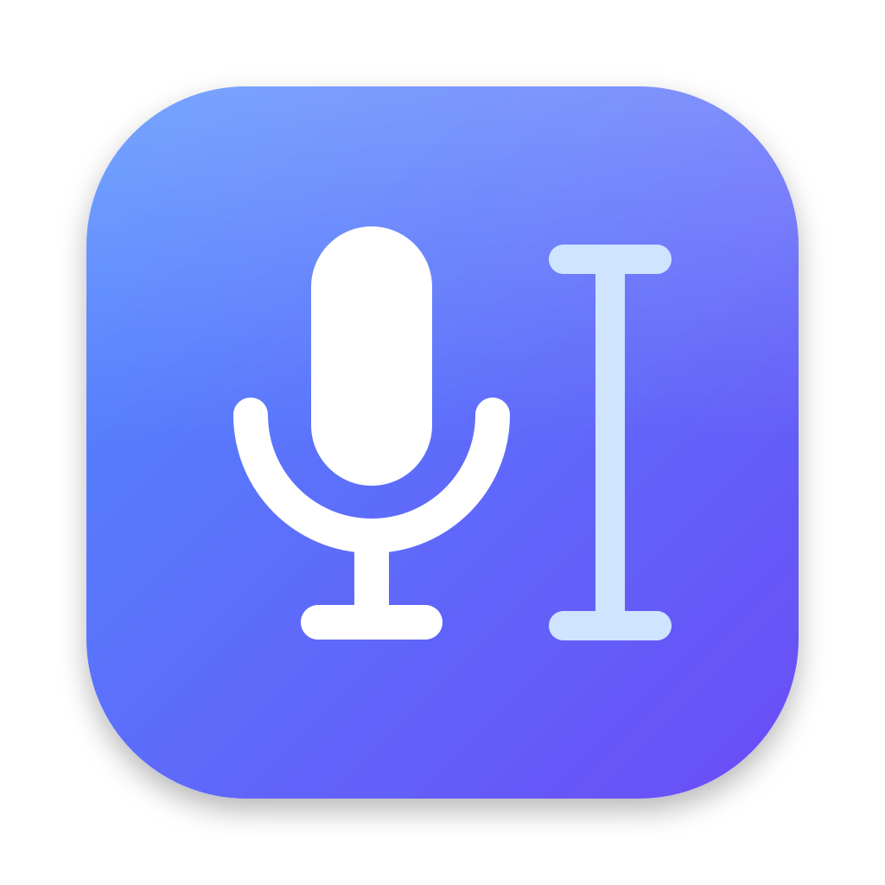
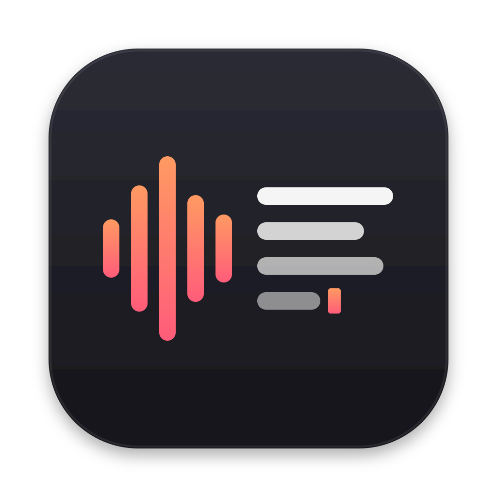
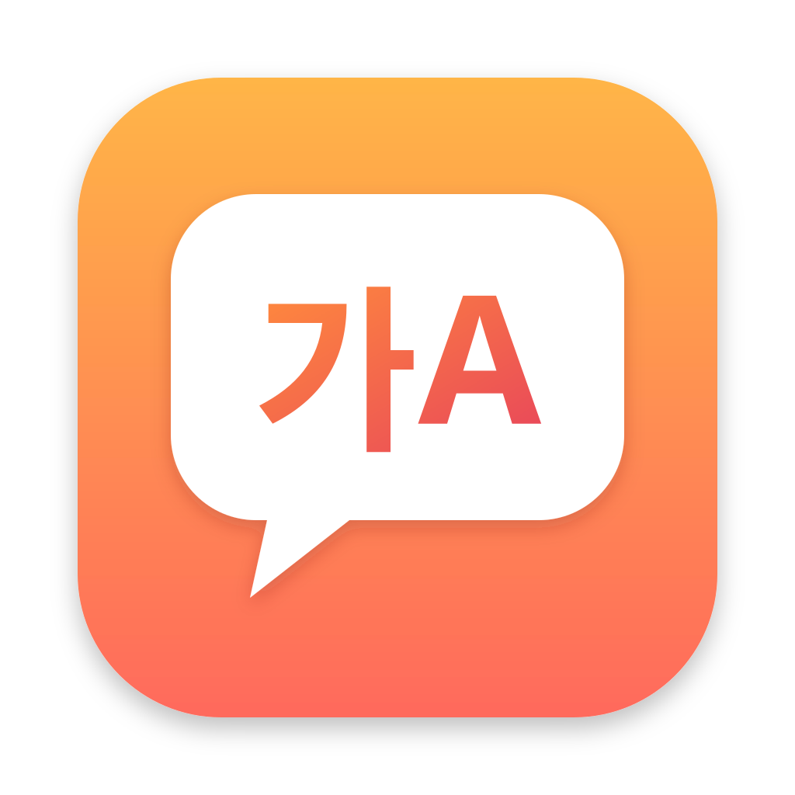

Voice Typing 앱 아이콘 후보
Finder·Launchpad·dmg 에 보이는 앱 아이콘입니다. 메뉴바 아이콘(🎙)은 그대로 둡니다. 아래 줄은 128 · 64 · 32px 실제 크기 미리보기입니다.
A안 · 마이크 + 텍스트 커서
"말하면 입력된다." 파란 계열, macOS 기본 앱과 잘 어울리는 단정한 느낌.

B안 · 음파 → 텍스트 줄
"소리가 글이 된다." 어두운 터미널 느낌, Claude Code 와 함께 쓰는 개발 도구 분위기.

C안 · 말풍선 속 "가A"
"한국어·영어 음성 입력." 따뜻한 색, 무엇을 하는 앱인지 가장 직접적으로 보임.

고르시면 그 아이콘을 앱(AppIcon.icns)과 dmg 에 넣어 다시 빌드합니다. 색이나 모양을 바꾸고 싶으시면 말씀해 주세요.